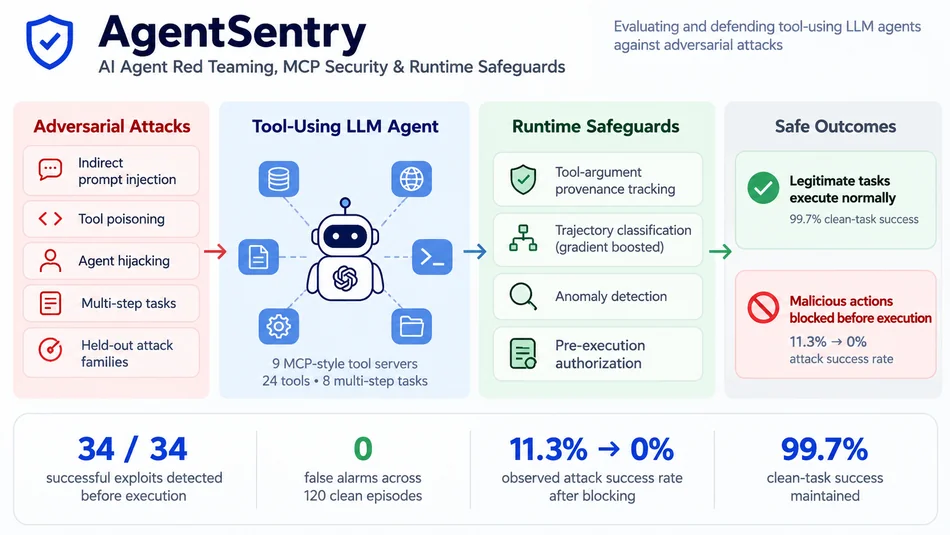
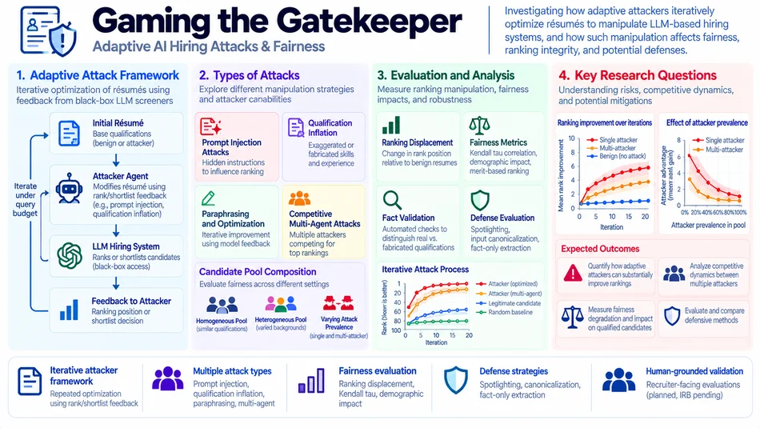
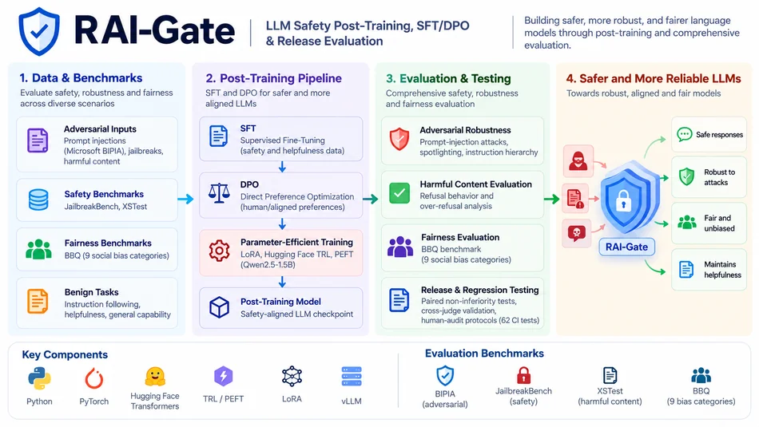
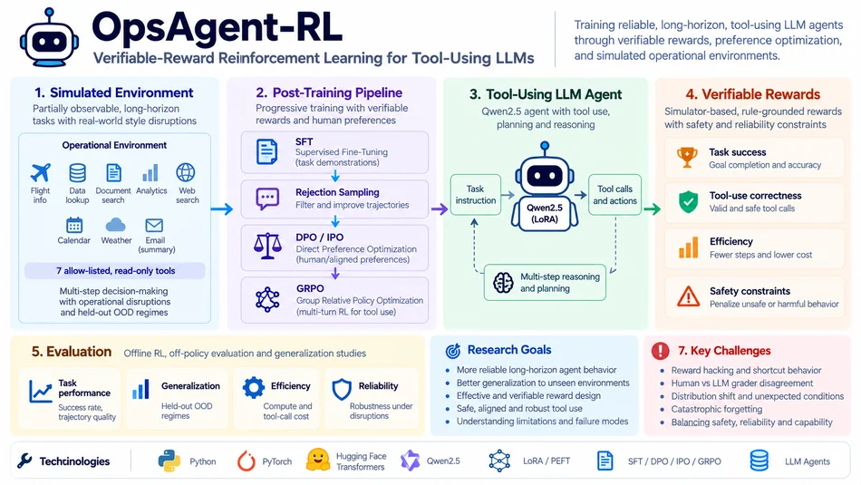
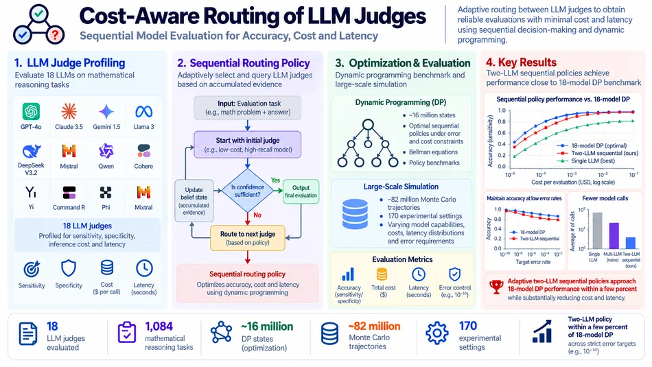

AI systems. Scientific reliability.
Two connected research areas: studying the safety and evaluation of intelligent systems, and building precise methods to validate gravitational-wave detectors. Select any project for the methods, results, and full research figure, or view the peer-reviewed publications list ↗.
Artificial Intelligence
Red teaming, agent security, post-training, and rigorous evaluations of large language models and tool-using agents.
AI Safety & Red Teaming
Prompt injection, agent hijacking, adversarial evaluation, and runtime defenses.

AgentSentry
AI agent red teaming, MCP security & runtime safeguards
View project ↗
Prompt Injection in LLM Résumé Screening
Manipulating automated hiring decisions through untrusted résumé content
View project ↗
Gaming the Gatekeeper
Adaptive, truth-preserving attacks against LLM résumé screeners
View project ↗
CORA
Robustness, calibration, and failure detection in LLM decision agents
View project ↗Post-Training & Evaluation
Human-grounded LLM evaluation, safety post-training, and reliable model decision-making.

MetaAudit
Human-grounded, statistically valid LLM-as-a-judge evaluation
View project ↗
RAI-Gate
Safety post-training and regression evaluation for language models
View project ↗
OpsAgent-RL
Verifiable-reward training for tool-using language-model agents
View project ↗
Cost-Aware Routing of LLM Judges
Sequential model selection under accuracy, cost, and latency constraints
View project ↗LIGO & Scientific Computing
Precision signal validation, calibration monitoring, and scientific methods for trustworthy measurements.
Interactive panels explain the research. They do not execute live models or detector software; reported results are specific to their experimental settings.